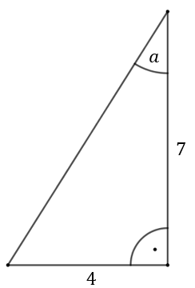
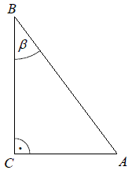

Obliczanie wartości funkcji trygonometrycznych
Do obliczania wartości funkcji trygonometrycznych w trójkącie prostokątnym o znanych
długościach boków korzystamy z definicji podanych w poprzednim rozdziale.
Oblicz \(\sin \alpha \), \(\cos \alpha \) oraz \(\operatorname{tg}
\alpha \). 
Obliczamy długość przeciwprostokątnej korzystając z twierdzenia Pitagorasa:
\[\begin{split} c^2&=7^2+4^2\\[6pt] c^2&=49+16\\[6pt] c^2&=65\\[6pt] c&=\sqrt{65} \end{split}\]
Zatem z definicji funkcji trygonometrycznych w trójkącie prostokątnym mamy: \[ \begin{split}
&\sin \alpha = \frac{4}{\sqrt{65}}=\frac{4\sqrt{65}}{65}\\[6pt] &\cos \alpha =
\frac{7}{\sqrt{65}}=\frac{7\sqrt{65}}{65}\\[6pt] &\operatorname{tg} \alpha = \frac{4}{7}
\end{split} \]
Gdy mamy podaną wartość jednej funkcji trygonometrycznej i musimy obliczyć wartość
innej funkcji trygonometrycznej, to możemy:
- albo skorzystać z trójkąta prostokątnego i definicji funkcji trygonometrycznych
- albo skorzystać z jedynki trygonometrycznej i wzoru na tangens: \[\sin^{2} \alpha +\cos^{2} \alpha =1\] \[\operatorname{tg} \alpha =\frac{\sin \alpha }{\cos \alpha }\]
Dane są długości boków \(|BC|=5\) i \(|AC|=3\) trójkąta
prostokątnego \( ABC \) o kącie ostrym \( \beta \) .  Wtedy
A.\(\sin \beta =\frac{3}{5} \)
B.\(\sin \beta =\frac{4}{5} \)
C.\(\sin \beta =\frac{3\sqrt{34}}{34} \)
D.\(\sin \beta =\frac{5\sqrt{34}}{34} \)
C
Cosinus kąta ostrego \(\alpha \) jest równy \(\frac{12}{13}\). Wtedy
A.\( \sin \alpha =\frac{13}{12} \)
B.\( \sin \alpha =\frac{1}{13} \)
C.\( \sin \alpha =\frac{5}{13} \)
D.\( \sin \alpha =\frac{25}{169} \)
C
Sinus kąta ostrego \(\alpha\) jest równy \(\frac{4}{5}\). Wtedy
A.\( \cos\alpha = \frac{5}{4} \)
B.\( \cos\alpha = \frac{1}{5} \)
C.\( \cos\alpha = \frac{9}{25} \)
D.\( \cos\alpha = \frac{3}{5} \)
\(cos\alpha = \frac{3}{5}\)
Kąt \(\alpha \) jest ostry i \(\operatorname{tg} \alpha =\frac{12}{5}\). Wówczas
\(\sin \alpha \) jest równy
A.\( \frac{5}{17} \)
B.\( \frac{12}{17} \)
C.\( \frac{5}{13} \)
D.\( \frac{12}{13} \)
D
Kąt \(\alpha\) jest ostry i spełniona jest równość \(\sin \alpha
=\frac{2\sqrt{6}}{7}\). Stąd wynika, że
A.\( \cos \alpha =\frac{24}{49} \)
B.\( \cos \alpha =\frac{5}{7} \)
C.\( \cos \alpha =\frac{25}{49} \)
D.\( \cos \alpha =\frac{5\sqrt{6}}{7} \)
B
Przyprostokątne trójkąta prostokątnego mają długości \(8\) i \(6\). Sinus większego
z kątów ostrych tego trójkąta jest równy
A.\( \frac{3}{5} \)
B.\( \frac{3}{4} \)
C.\( \frac{4}{5} \)
D.\( \frac{4}{3} \)
C
Kąt \( \alpha \) jest ostry i \( \sin \alpha =\frac{1}{4}
\). Wówczas
A.\(\cos \alpha \lt \frac{3}{4} \)
B.\(\cos \alpha =\frac{3}{4} \)
C.\(\cos \alpha =\frac{\sqrt{13}}{4} \)
D.\(\cos \alpha >\frac{\sqrt{13}}{4} \)
D
Kąt \(\alpha \) jest ostry i \(\sin \alpha =\frac{7}{13}\). Wtedy
\(\operatorname{tg} \alpha \) jest równy
A.\( \frac{7}{6} \)
B.\( \frac{7\cdot 13}{120} \)
C.\( \frac{7}{\sqrt{120}} \)
D.\( \frac{7}{13\sqrt{120}} \)
C
Kąt \(\alpha \) jest ostry i \(\sin \alpha =0{,}6\). Wówczas
A.\( \cos \alpha =0{,}8 \) i \(\operatorname{tg} \alpha
=0{,}4\)
B.\( \cos \alpha =0{,}4 \) i \(\operatorname{tg} \alpha
=1{,}5\)
C.\( \cos \alpha =0{,}8 \) i \(\operatorname{tg} \alpha
=0{,}75\)
D.\( \cos \alpha =0{,}4 \) i \(\operatorname{tg} \alpha
=0{,}75\)
C
Kąt \(\alpha \) jest ostry oraz \(\sin \alpha =\frac{2}{5}\). Wówczas
A.\( \cos \alpha =\sin \alpha \)
B.\( \cos \alpha >\sin \alpha \)
C.\( \cos \alpha \lt \sin \alpha \)
D.\( \cos \alpha =1-\sin \alpha \)
B
Kąt \(\alpha\) jest ostry i \(\sin\alpha =\frac{\sqrt{2}}{2} \). Wtedy
\(\operatorname{tg}\alpha\) jest równy
A.\( \frac{\sqrt{2}}{2} \)
B.\( \frac{2}{\sqrt{2}} \)
C.\( \sqrt{2} \)
D.\( 1 \)
D
Kąt \(\alpha \) jest ostry i \(\cos \alpha =\frac{4}{5}\). Oblicz \(\sin \alpha \)
i \(\operatorname{tg} \alpha \).
\(\sin \alpha =\frac{3}{5}\), \(\operatorname{tg} \alpha =\frac{3}{4}\)
Sinus kąta ostrego \(\alpha \) jest równy \(\frac{3}{7}\). Wówczas cosinus tego
kąta jest równy:
A.\( \frac{4}{7} \)
B.\( \frac{7}{4} \)
C.\( \frac{2\sqrt{7}}{7} \)
D.\( \frac{2\sqrt{10}}{7} \)
D
Kąt \(\alpha \) jest ostry i \(\cos \alpha =\frac{3}{7}\). Wtedy
A.\( \sin \alpha =\frac{2\sqrt{10}}{7} \)
B.\( \sin \alpha =\frac{\sqrt{10}}{7} \)
C.\( \sin \alpha =\frac{4}{7} \)
D.\( \sin \alpha =\frac{3}{4} \)
A
W trójkącie, przedstawionym na rysunku poniżej, sinus kąta ostrego \(\alpha \) jest
równy 
A.\( \frac{1}{5} \)
B.\( \frac{\sqrt{6}}{12} \)
C.\( \frac{5}{24} \)
D.\( \frac{2\sqrt{6}}{5} \)
D
Kąt \(\alpha \) jest ostry i \(\sin \alpha =\frac{2}{5}\). Wówczas \(\cos \alpha \)
jest równy
A.\( \frac{5}{2} \)
B.\( \frac{\sqrt{21}}{4} \)
C.\( \frac{3}{5} \)
D.\( \frac{\sqrt{21}}{5} \)
D
Sinus kąta ostrego \(\alpha \) jest równy \(\frac{3}{4}\). Wówczas
A.\( \cos \alpha =\frac{1}{4} \)
B.\( \cos \alpha =\frac{\sqrt{7}}{4} \)
C.\( \cos \alpha =\frac{7}{16} \)
D.\( \cos \alpha =\frac{\sqrt{13}}{16} \)
B
W trójkącie prostokątnym o długościach przyprostokątnych \(2\) i \(5\) cosinus
większego z kątów ostrych jest równy
A.\( \frac{5}{2} \)
B.\( \frac{2}{5} \)
C.\( \frac{2}{\sqrt{29}} \)
D.\( \frac{5}{\sqrt{29}} \)
C
Dany jest trójkąt prostokątny o kątach ostrych \(\alpha \) i \(\beta \), w którym
\(\sin \alpha = \frac{\sqrt{6}}{3}\). Wtedy
A.\( \cos \alpha =\frac{\sqrt{3}}{2} \)
B.\( \cos \beta =\frac{\sqrt{6}}{3} \)
C.\( \operatorname{tg} \alpha =\frac{\sqrt{3}}{3} \)
D.\( \operatorname{tg} \beta =\frac{\sqrt{6}}{2} \)
B
Kąt \(\alpha \) jest ostry i \(\operatorname{tg} \alpha =\frac{2}{3}\). Wtedy
A.\( \sin \alpha =\frac{3\sqrt{13}}{26} \)
B.\( \sin \alpha =\frac{\sqrt{13}}{13} \)
C.\( \sin \alpha =\frac{2\sqrt{13}}{13} \)
D.\( \sin \alpha =\frac{3\sqrt{13}}{13} \)
C
Kąt \(\alpha \) jest ostry i \(\sin \alpha =\frac{4}{5}\). Wtedy wartość wyrażenia
\(\sin \alpha -\cos \alpha \) jest równa
A.\( \frac{1}{5} \)
B.\( \frac{3}{5} \)
C.\( \frac{17}{25} \)
D.\( \frac{1}{25} \)
A